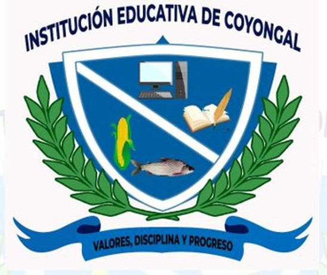

Conoce las actividades, proyectos y eventos más recientes de nuestra comunidad educativa.
¡Orgullosos de nuestra cultura, orgullosos de ser INSTEC!
¡Que suene la tambora, que viva Coyongal y que nuestras tradiciones sigan pasando de generación en generación! 🥁
Proyecto «Semillero de Tradiciones Orales y Musicales de la Depresión Momposina»
La Institución Educativa de Coyongal, con el apoyo del Ministerio de las Culturas, las Artes y los Saberes, desarrolla los Talleres de Música de Tambora.
Esta iniciativa promueve la formación artística, el intercambio de saberes entre generaciones y la preservación de las expresiones musicales tradicionales que hacen parte de la identidad cultural de nuestra región.
Agradecemos al Ministerio de las Culturas, las Artes y los Saberes por apoyar este proceso de formación y contribuir al fortalecimiento de las tradiciones culturales de la Depresión Momposina.
La Institución Educativa de Coyongal – INSTEC es una institución oficial ubicada en el corregimiento de Coyongal, a orillas del río Magdalena, a 12 km de Magangué, Bolívar. Con más de 95 años de historia, forma integralmente a niños, niñas y jóvenes rurales en los niveles de preescolar, básica primaria, básica secundaria y media académica.
Adoptamos el enfoque pedagógico CRESE (Ciudadanía, Reconciliación, Educación Socioemocional, Antirracismo y Cambio Climático), promoviendo una educación que trasciende el aula y transforma comunidades, con un firme compromiso por la formación integral de nuestros estudiantes y egresados.
La INSTEC es una institución de carácter oficial ubicada a la margen derecha del río Magdalena, a 12 km de Magangué, comprometida con la educación rural de calidad.
La INSTEC tiene como misión formar integralmente a niños, niñas y jóvenes rurales mediante una educación basada en competencias, orientada por los principios de la educación CRESE (Ciudadanía, Reconciliación, Educación Socioemocional, Antirracismo y Cambio Climático).
Desde una pedagogía activa, investigativa y constructivista, la institución promueve el desarrollo de saberes, habilidades y valores que permitan a los estudiantes pensar críticamente, actuar con autonomía, convivir pacíficamente y cuidar su entorno natural y social.
Hacia el año 2035, la INSTEC será reconocida como una comunidad educativa rural líder en la formación integral de seres humanos felices, críticos y con pensamiento científico, capaces de comunicarse en una segunda lengua y comprometidos con el desarrollo sostenible de su entorno.
La INSTEC se consolidará como un espacio inclusivo, participativo y ambientalmente responsable, donde la educación se viva como una experiencia significativa que fortalece la ciudadanía, promueve la reconciliación y contribuye a la construcción de una sociedad más justa y en paz.
Formación completa: preescolar, básica primaria, básica secundaria y media académica con título de Bachiller.
Presencia en Coyongal, Tolú, Santa Coita, Roma, Punta de Cartagena, Santa Pabla, Santa Mónica, Isla Perico y más.
Atendemos una población diversa con 49 docentes, incluyendo población inclusiva con convenio CORPIDER.
Formación basada en Ciudadanía, Reconciliación, Educación Socioemocional, Antirracismo y Cambio Climático.
La INSTEC inició sus labores como escuela privada en 1929. Las familias pagaban a personas con formación básica para enseñar a leer, escribir y las cuatro operaciones. La escuela funcionaba en las casas de los docentes. Entre los primeros maestros se destacaron Enrique Larios, Pablo Cañas, Felicita Pabuena, Martín De León y Maximiliano Peña.
En 1960 inicia como escuela pública, con el nombramiento de la profesora Ernelda Cárcamo. En 1986 se crea el Colegio Departamental de Bachillerato de Coyongal mediante ordenanza N° 31, siendo gobernador el Dr. Armando Villegas Centeno. Inicia labores el 17 de abril de ese año.
En 1990, tras un período de cierre, se reinician labores con la rectora Soledad Fernández Sinning y el profesor Hernán Palomino Acosta, con apenas 13 estudiantes y sin local ni mobiliario.
El 14 de junio de 2001 se crea la Concentración Educativa de Coyongal por Decreto N° 395, y al año siguiente se constituye como Institución Educativa de Coyongal según ordenanza N° 20, atendiendo 1.146 estudiantes con 32 docentes.
Toda persona posee un valor intrínseco. Formamos seres conscientes de su valor, solidarios y capaces de reconocer la dignidad de los demás.
Garantizamos igualdad de oportunidades valorando las diferencias individuales y culturales, propiciando ambientes inclusivos donde la diversidad es riqueza.
Reconocemos la riqueza cultural, étnica y social de nuestra comunidad rural. Fomentamos el diálogo entre saberes y el respeto por las identidades del territorio.
Formación plena en todas las dimensiones: cognitiva, emocional, social, ética, espiritual y física. Promovemos el saber, el hacer, el ser y el convivir.
Fomentamos la intervención activa y responsable de todos en la toma de decisiones y la gestión institucional, fortaleciendo el sentido de pertenencia.
Promovemos la vida como valor supremo y el respeto mutuo como base de la convivencia mediante el diálogo, la empatía y la resolución pacífica de conflictos.
Asumimos la educación comprometida con el entorno natural y cultural. Impulsamos el cuidado del medio ambiente y el desarrollo sostenible.
Buscamos el mejoramiento continuo de nuestros procesos pedagógicos y administrativos, garantizando educación pertinente y acorde al contexto rural.
Fomentamos el orgullo de pertenecer a la INSTEC, reconociendo su historia, valores y compromiso con la comunidad. La identidad fortalece la cohesión institucional.
Formamos estudiantes capaces de reflexionar, analizar y decidir responsablemente, construyendo ciudadanía consciente, participativa y transformadora.
Fomentamos el trabajo en equipo, la cooperación y la solidaridad para el logro de metas comunes que fortalecen la unidad institucional.
La educación se adapta a las características del contexto rural, las necesidades de los estudiantes y las transformaciones sociales, económicas y ambientales del entorno.
Reconocemos y valoramos al otro, aceptando diferencias culturales y personales. Buen trato, escucha activa y sana convivencia entre todos.
Cumplimos los deberes académicos y sociales con compromiso y puntualidad. Cada estudiante es consciente de las consecuencias de sus actos.
Dedicación hacia el estudio y participación en actividades institucionales. Orgullo de ser INSTEC, cuidado de los espacios y búsqueda de la excelencia.
Capacidad de autorregular la conducta, cumplir normas y mantener hábitos de orden, esfuerzo y constancia como herramienta de crecimiento personal.
Orientamos todas las acciones hacia la verdad, la transparencia y la coherencia entre lo que se piensa, se dice y se hace.
Promovemos la equidad, la imparcialidad y el respeto por los derechos y deberes de cada persona, garantizando igualdad de trato digno.
La vida rural enseña el valor de la cooperación. Promovemos la empatía, la colaboración y la disposición para apoyar a quien lo necesita.
Aceptamos y reconocemos las diferencias individuales, culturales y sociales, fortaleciendo la convivencia pacífica y el diálogo como medios de resolución de conflictos.
Fomentamos el amor y el respeto por la naturaleza, prácticas sostenibles y el uso responsable de los recursos naturales del entorno.
Jornada matinal · Calendario A · Bachillerato Académico
La INSTEC asume un enfoque pedagógico integral que orienta su quehacer hacia la formación de seres humanos íntegros, competentes y comprometidos con la transformación de su entorno rural. La educación es entendida como una práctica social que trasciende la simple transmisión de conocimientos para centrarse en la construcción de aprendizajes significativos.
El docente asume el rol de mediador del aprendizaje, promoviendo ambientes que estimulen la curiosidad, la participación y la reflexión crítica. El estudiante es sujeto activo, protagonista de su propio aprendizaje.
Antropológico: El ser humano como sujeto activo, libre, responsable y transformador de su entorno.
Epistemológico: El conocimiento como construcción social y dinámica mediante el diálogo y la reflexión crítica.
Pedagógico: Modelo constructivista social, activo y por competencias que articula el conocimiento con la vida.
Sociológico: Institución abierta a la comunidad, comprometida con el desarrollo local, la inclusión y la equidad.
Promueve el amor por la naturaleza, la conservación de los recursos naturales y la conciencia ecológica como parte de la identidad rural de Coyongal.
Estrategias de prevención y atención de emergencias que garantizan la seguridad de toda la comunidad educativa en las 10 sedes.
Incluye Escuela para Padres, Proyecto de Valores, Proyecto de Vida, Educación Emocional y Educación para la Sexualidad y Construcción de Ciudadanía.
Forma ciudadanos activos, participativos y comprometidos con la construcción de una sociedad justa, equitativa y en paz desde el aula.
Los estudiantes de media contribuyen activamente al desarrollo comunitario mediante proyectos de servicio social que impactan positivamente el entorno rural.
Proyecto pedagógico de calidad para garantizar el desarrollo integral y los aprendizajes fundamentales desde los primeros años de vida de los niños.
La INSTEC cuenta con tres órganos de gobierno escolar y múltiples espacios de participación democrática de la comunidad educativa.
Instancia directiva de participación de la comunidad educativa. Presidido por el rector. Integrado por representantes de docentes, estudiantes, padres de familia, exalumnos y sector productivo.
Instancia superior para la orientación pedagógica. Presidido por el rector, con docentes líderes de área. Organiza el plan de estudios y evalúa el currículo permanentemente.
Robin Jhair Piñeres Retamoza. Máxima instancia ejecutiva. Orienta la ejecución del PEI, promueve la calidad educativa, mantiene relaciones con autoridades educativas y comunidad.
Estudiante del último grado elegido por voto secreto. Promueve el ejercicio de los derechos y deberes de los estudiantes y recibe sus quejas y reclamos ante directivos.
Vela por la transparencia y buen uso de los recursos públicos. Vigila fondos de servicio educativo, restaurante escolar, obras de infraestructura y proyectos institucionales.
Órgano de participación de los padres de familia destinado a asegurar su continua participación en el proceso educativo y elevar los resultados de calidad del servicio.

El escudo de la INSTEC tiene un triángulo curvilíneo dividido diagonalmente por una franja blanca, rodeado de guirnaldas de laureles que simbolizan la inmortalidad de la victoria.
Colores azul rey y blanco: los colores institucionales. En la parte superior: un computador (TIC) y un libro con pluma (sabiduría). En la parte inferior: una mazorca de maíz (agricultura) y un pez (pesca del río Magdalena). En la cinta inferior el lema: "Valores, Disciplina y Progreso".
Dimensión 100×130 cm. Tres franjas horizontales: azul rey superior (30%) – cielo, tranquilidad, lealtad y fortaleza; blanca intermedia (40%) – unidad, fraternidad, armonía y paz, con el escudo institucional en el centro; azul rey inferior (30%) – espiritualidad y justicia.
Lema Institucional
♪ Canto Institucional ♪
Letra: Ismael Bobadilla
Ha llegado el momento sublime
Del talento, surgir y triunfar
Se rompieron por fin las cadenas
De ignorancia y de incapacidad
Oh Institución Educativa
Eres mi tabla de salvación
Para forjar el rol de mi vida
Por siempre te llevaré prendida
En el fondo de mi corazón (BIS)
Santa Mónica, isla y Santa Pabla
Playa y punta de Cartagena
Guamal, Roma, Tolú y Santa Coita
A estudiar Coyongal nos invita
Para unidos progresos alcanzar (BIS)
Con INSTEC se alegra mi mañana
Cual camino de amor y amistad
Talento que se forja en tus aulas
Será siempre estandarte de paz.
Oh Institución Educativa
Eres mi tabla de salvación
Si forjaste el rol de mi vida
Por siempre te llevaré prendida
En el fondo de mi corazón (BIS)
La INSTEC tiene presencia en el corregimiento de Coyongal y sus veredas aledañas. Siete sedes funcionan en modalidad multigrado y tres en modalidad unigrado.
| Sede | Código DANE | Dirección | Modalidad | Niveles |
|---|---|---|---|---|
| Sede Principal (Bachillerato) | 213430002337 | Coyongal – Av. El Campo | Unigrado | Básica Secundaria y Media |
| Sede María Donado Arroyo | 213430800072 | Coyongal – La Plaza | Unigrado | Preescolar y Básica Primaria |
| Sede Tolú | 213430000172 | Tolú – Barrio Abajo | Unigrado | Preescolar y Básica Primaria |
| Sede Santa Coita | 213430001012 | Santa Coita – Barrio Abajo | Multigrado | Preescolar y Básica Primaria |
| Sede Roma | 213430001870 | Roma – Barrio Abajo | Multigrado | Preescolar y Básica Primaria |
| Sede Punta de Cartagena | 213430000539 | Punta de Cartagena – Centro | Multigrado | Preescolar y Básica Primaria |
| Sede Playa de las Flores | 213430002400 | Playa de las Flores | Multigrado | Preescolar y Básica Primaria |
| Sede Santa Pabla | 213430002990 | Santa Pabla – Sector Central | Multigrado | Preescolar y Básica Primaria |
| Sede Santa Mónica | 213430001748 | Santa Mónica – Sector Central | Multigrado | Preescolar y Básica Primaria |
| Sede Isla Perico | 213430002850 | Isla Perico | Multigrado | Preescolar y Básica Primaria |
Convenio para atender a la población con necesidades educativas especiales. Se elaboran PIAR individualizados y se realizan campañas de capacitación y acompañamiento a docentes.
El egresado de la INSTEC es un ciudadano íntegro, responsable y comprometido con el desarrollo de su comunidad. Se caracteriza por su formación ética, académica y social, producto de un proceso educativo que promueve el pensamiento crítico, la autonomía, la solidaridad y el respeto por la diversidad.
Es un ser humano consciente de su papel en la sociedad, que aplica los conocimientos, habilidades y valores adquiridos para contribuir al progreso social, económico, cultural y ambiental de su entorno, especialmente en el contexto rural.
Se proyecta como un ciudadano que valora la educación, busca la superación personal y profesional, y ejerce su libertad con responsabilidad, compromiso y sentido ético.
Liderazgo positivo, capacidad de trabajo en equipo e ideas innovadoras para proyectos comunitarios.
Preparación académica que les permite continuar estudios técnicos, tecnológicos y universitarios para seguir creciendo.
Amor por Coyongal y sus veredas. El egresado es agente de cambio y desarrollo sostenible en su comunidad.
📂 Los documentos institucionales se publicarán aquí muy pronto. Si necesitas alguno con urgencia, escríbenos.
Redes Sociales
Al enviar se abrirá tu aplicación de correo o WhatsApp con el mensaje listo; solo debes confirmar el envío.